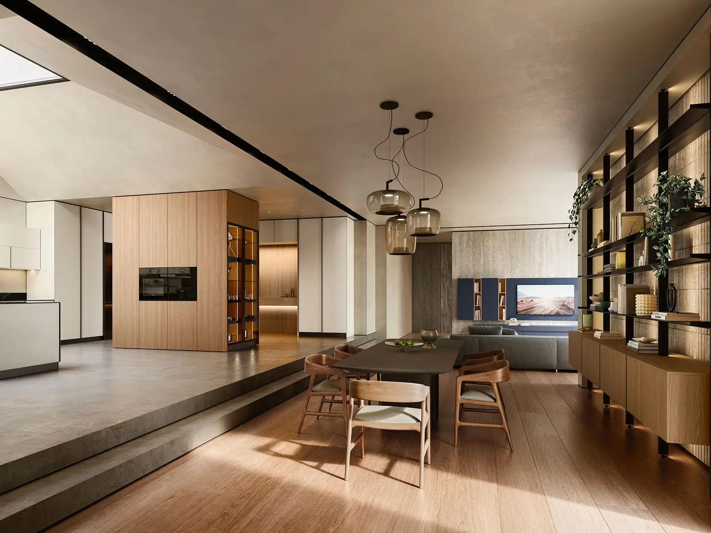
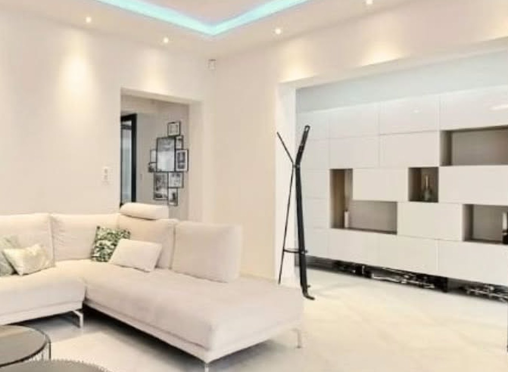
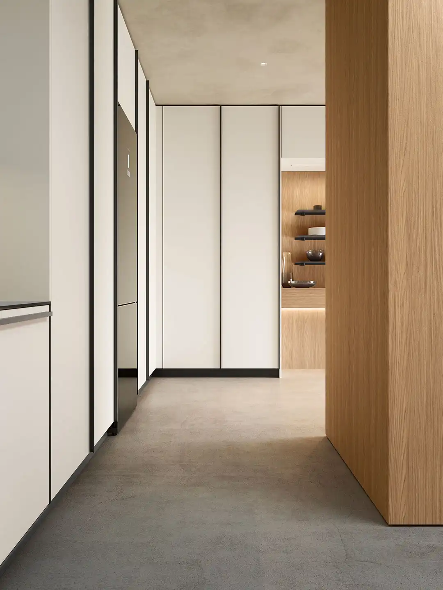

Sur mesure
Du mobilier pensé pour chaque pièce.
Sur mesure
Toute la maison, une même signature.
- 01
Cuisines
Cuisines italiennes sur mesure, avec îlot, en L ou linéaires, du plan à la pose.
- 02
Meubles sur mesure
Meubles TV, compositions murales à niches, bibliothèques : dessinés pour votre séjour.
- 03
Dressings et placards
Rangements toute hauteur, intégrés au mur, qui font oublier qu'ils sont là.
- 04
Salle de bain et buanderie
Meubles vasque, plans en bois et buanderies fonctionnelles, dans les mêmes finitions.
- 05
Aménagement intérieur
Habillages muraux, escaliers, portes verrière et éclairages : l'ensemble de la pièce.





Le détail
Chaque centimètre compte.
Un angle est souvent difficile à aménager. Nous n'en perdons aucun : avec nos paniers d'angle, il suffit de tirer le premier pour que le second, placé à l'arrière, vienne de lui-même vers vous.
Tiroirs à sortie totale, colonnes, niches éclairées : des solutions discrètes qui rendent la cuisine plus pratique au quotidien.